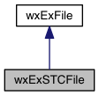

Adds file read and write to wxExSTC. More...
#include <wx/extension/stcfile.h>
Inheritance diagram for wxExSTCFile:

Public Member Functions | |
| wxExSTCFile (wxExSTC *stc, const std::string &filename=std::string()) | |
| Constructor. More... | |
| virtual bool | GetContentsChanged () const override |
| Override virtual methods. | |
| virtual void | ResetContentsChanged () override |
| Resets contents changed. | |
 Public Member Functions inherited from wxExFile Public Member Functions inherited from wxExFile | |
| wxExFile (bool open_file=true) | |
| Default constructor. More... | |
| wxExFile (const wxExPath &filename, wxFile::OpenMode mode=wxFile::read, bool open_file=true) | |
| Constructor taking a filename. | |
| wxExFile (const std::string &filename, wxFile::OpenMode mode=wxFile::read, bool open_file=true) | |
| Constructor taking a string filename. | |
| wxExFile (const wxExFile &rhs) | |
| Copy constructor. | |
| wxExFile & | operator= (const wxExFile &f) |
| Assignment operator. | |
| virtual | ~wxExFile () |
| Destructor, closes file if it was opened. | |
| bool | CheckSync () |
| Checks whether this file can be synced, and syncs (invokes DoFileLoad) the file if so. More... | |
| bool | FileLoad (const wxExPath &filename) |
| Sets the filename member, opens the file if asked for, invokes DoFileLoad, and closes the file again. More... | |
| void | FileNew (const wxExPath &filename) |
| Sets the filename member and invokes DoFileNew. | |
| bool | FileSave (const wxExPath &filename=wxExPath()) |
| Sets the filename member if filename is ok, opens the file if asked for, invokes DoFileSave, and closes the file again. More... | |
| const auto & | GetFileName () const |
| Returns the file name. | |
| bool | IsOpened () const |
| Returns true if file is opened. | |
| bool | Open (const wxExPath &filename, wxFile::OpenMode mode=wxFile::read, int access=wxS_DEFAULT) |
| Opens specified file. | |
| bool | Open (wxFile::OpenMode mode=wxFile::read, int access=wxS_DEFAULT) |
| Opens current filename. | |
| const wxCharBuffer * | Read (wxFileOffset seek_position=0) |
| Reads this file into a buffer. | |
| bool | Write (const wxCharBuffer &buffer) |
| Writes file from buffer. | |
| bool | Write (const std::string &s) |
| Writes file from string. | |
Protected Member Functions | |
| virtual bool | DoFileLoad (bool synced=false) override |
| Invoked by FileLoad, allows you to load the file. More... | |
| virtual void | DoFileNew () override |
| Invoked by FileNew, allows you to make a new (empty) file. | |
| virtual void | DoFileSave (bool save_as=false) override |
| Invoked by FileSave, allows you to save the file. More... | |
| Protected Member Functions inherited from wxExFile | |
| void | Assign (const wxExPath &filename) |
| Assigns the filename. More... | |
| wxFileOffset | Length () const |
| Returns length. | |
Detailed Description
Adds file read and write to wxExSTC.
Constructor & Destructor Documentation
◆ wxExSTCFile()
| wxExSTCFile::wxExSTCFile | ( | wxExSTC * | stc, |
| const std::string & | filename = std::string() |
||
| ) |
Constructor.
Does not open the file.
- Parameters
-
stc the stc component filename the filename to be assigned if not empty
Member Function Documentation
◆ DoFileLoad()
|
overrideprotectedvirtual |
Invoked by FileLoad, allows you to load the file.
The file is already opened, so you can call Read. If synced is true, this call was a result of CheckSync and not of FileLoad.
Reimplemented from wxExFile.
◆ DoFileSave()
|
overrideprotectedvirtual |
Invoked by FileSave, allows you to save the file.
The file is already opened.
Reimplemented from wxExFile.